Relatório de apresentação do protótipo · Vice-Presidência · Produtiva Júnior
Os números deste relatório são de uma base de demonstração (dados fictícios). As regras de pontuação são uma proposta em validação, e os valores do PIPJ são ilustrativos.
1. Objetivo
Este relatório apresenta o protótipo do módulo de Gamificação do Acompanhamento Estratégico, proposto no Plano de Ação da Vice-Presidência (OKR 1, KR 1.2). O módulo é uma nova área do sistema estratégico da VP. Ele transforma o registro das atividades dos núcleos em pontos, ranking e indicadores, e liga esse resultado ao reconhecimento na RG e ao PIPJ.
O protótipo serve para mostrar à diretoria e aos núcleos como a proposta funcionaria na prática, antes de qualquer desenvolvimento definitivo.
2. O problema que a gamificação resolve
Hoje a gerente da VP acompanha o tático de cada núcleo a cada 15 dias e no início de cada batalha. As atividades são registradas no Monday, mas:
não existem indicadores para comparar a execução dos núcleos;
muita atividade é feita e não é registrada, e por isso não aparece no acompanhamento;
não há um incentivo claro para manter o status das atividades atualizado.
A gamificação cria esse incentivo: registrar e cumprir prazos passa a dar pontos ao núcleo, e deixar atividades sem registro ou com status desatualizado tira pontos.
3. Como funciona, em 4 etapas
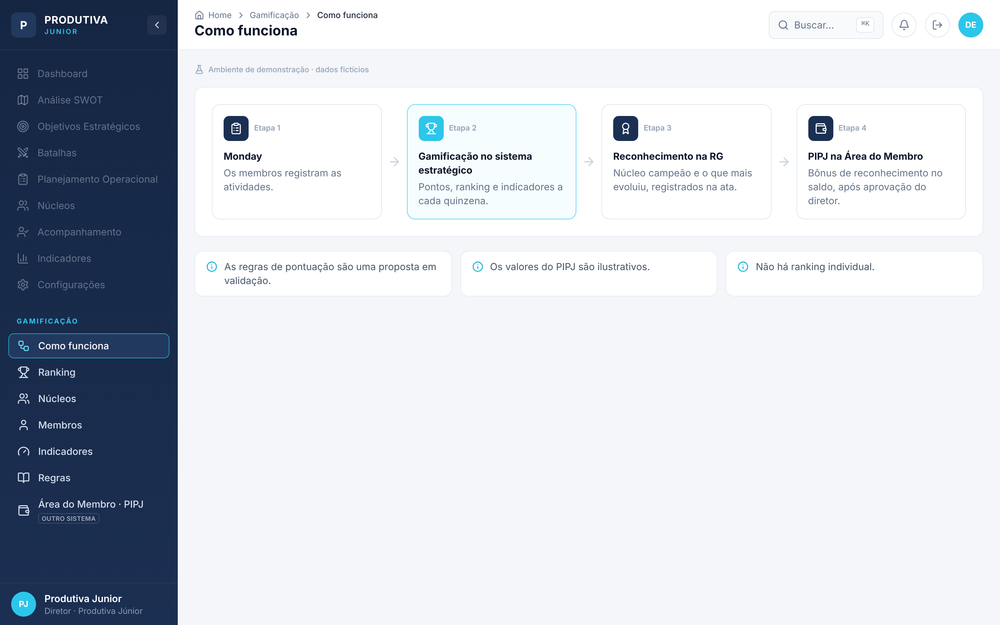
Figura 1. Tela "Como funciona": a linha lógica do módulo, do Monday ao PIPJ.
Monday: os membros registram as atividades do núcleo, como já fazem hoje.
Gamificação no sistema estratégico: a cada quinzena, o sistema calcula os pontos, o índice de cada núcleo, o ranking e os indicadores.
Reconhecimento na RG: o núcleo campeão e o núcleo que mais evoluiu são reconhecidos e registrados na ata.
PIPJ na Área do Membro: os membros dos núcleos reconhecidos recebem um bônus de reconhecimento no saldo do PIPJ, depois da aprovação do diretor.
Três princípios valem para todo o módulo:
A competição é entre núcleos, não entre pessoas. Não existe ranking individual.
As regras são uma proposta em validação e podem mudar antes da implantação.
Os valores do PIPJ são ilustrativos. O bônus depende de aprovação da diretoria.
4. Núcleos e estrutura de cargos
O ranking considera cinco núcleos, cada um com sua estrutura de cargos:
Núcleo
Estrutura de cargos
Presidência
Diretor – Assessor
Vice-Presidência
Diretor – Gerente – Assessor
Projetos
Diretor – Gerente – Consultor
Marketing
Diretor – Closer – SDR
Gestão de Pessoas
Diretor – Gerente – Assessor
5. Regras de pontuação
Cada atividade da quinzena recebe uma regra, de acordo com a situação em que está:
Código
Situação
Pontos
R1
Concluída e registrada até o prazo
+3
R2
Concluída e registrada depois do prazo
+1
R3
Feita e não registrada (lançada pela VP no acompanhamento)
−2
R4
Prazo vencido com status desatualizado
−1
R5
Bônus: acompanhamento sem ponto de atenção
+5
R6
Bônus: plano de ação concluído no prazo
+5
Fórmula do índice
Índice = (soma dos pontos R1 a R4 + bônus) ÷ número de atividades da quinzena
Dividir pelo número de atividades torna a comparação justa entre núcleos de tamanhos diferentes. Por isso o ranking usa o índice, e não o total de pontos. Na demonstração, Projetos tem mais pontos (73) que a Presidência (64), mas fica em 2º lugar porque fez mais atividades (30 contra 24).
Exemplo (Presidência, Quinzena 4):
Regra
Quantidade
Peso
Subtotal
R1
20
+3
+60
R2
2
+1
+2
R3
1
−2
−2
R4
1
−1
−1
R5 (bônus)
1
+5
+5
Total
64 pontos
64 pontos ÷ 24 atividades = índice 2,67.
Desempate
Maior percentual de atividades entregues no prazo (R1 ÷ atividades).
Menos atividades atrasadas (R3 + R4).
Semáforo dos indicadores
Verde: valor igual ou acima da meta.
Amarelo: até 10 pontos percentuais abaixo da meta.
Vermelho: mais de 10 pontos percentuais abaixo da meta.
Um indicador vermelho por duas quinzenas seguidas vai para a pauta da RN (Reunião de Núcleos).
6. Navegação
O módulo aparece como uma nova seção, GAMIFICAÇÃO, na barra lateral do sistema estratégico. Os itens atuais do sistema (Dashboard, Análise SWOT, Batalhas etc.) aparecem esmaecidos, só para mostrar onde o módulo se encaixa. As telas do módulo são:
Tela
Para quem
O que mostra
Como funciona
Apresentação
A linha lógica do módulo
Ranking
Todos
Posição dos núcleos, destaques e evolução
Núcleos
Todos
Detalhe de um núcleo: pontos, indicadores, pendências e estrutura
Membros
VP e o próprio membro
Atividades e contribuição de um membro, sem comparação
Indicadores
Gerente e assessores da VP
Matriz de indicadores e pontos de atenção para a RN
Regras
Todos
Regras, fórmula, semáforo e configurações pendentes
Área do Membro · PIPJ
Membro (outro sistema)
Carteira PIPJ e bônus de reconhecimento
O sistema também funciona no celular. Nesse caso, a barra lateral vira um menu que abre pelo botão no topo.
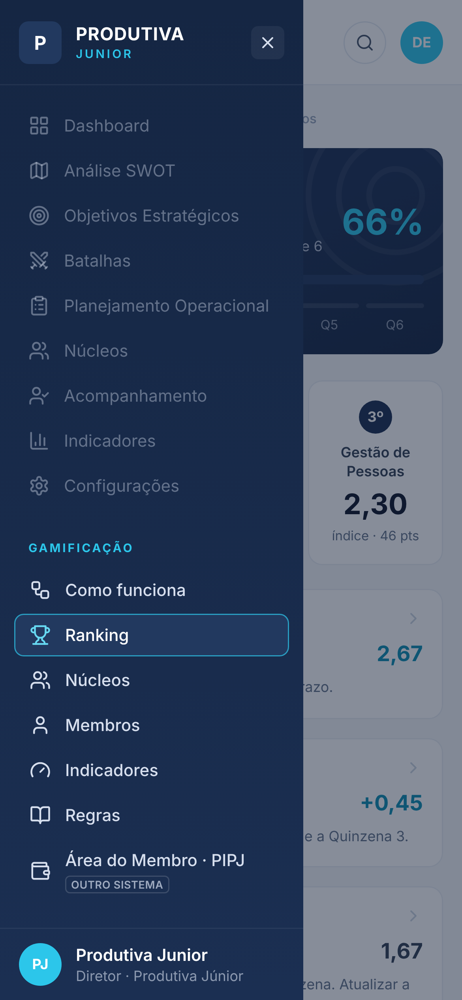
Figura 2. No celular, o conteúdo se ajusta à largura da tela e o menu lateral abre pelo botão no topo.
7. Tela Ranking
É a tela inicial do módulo.
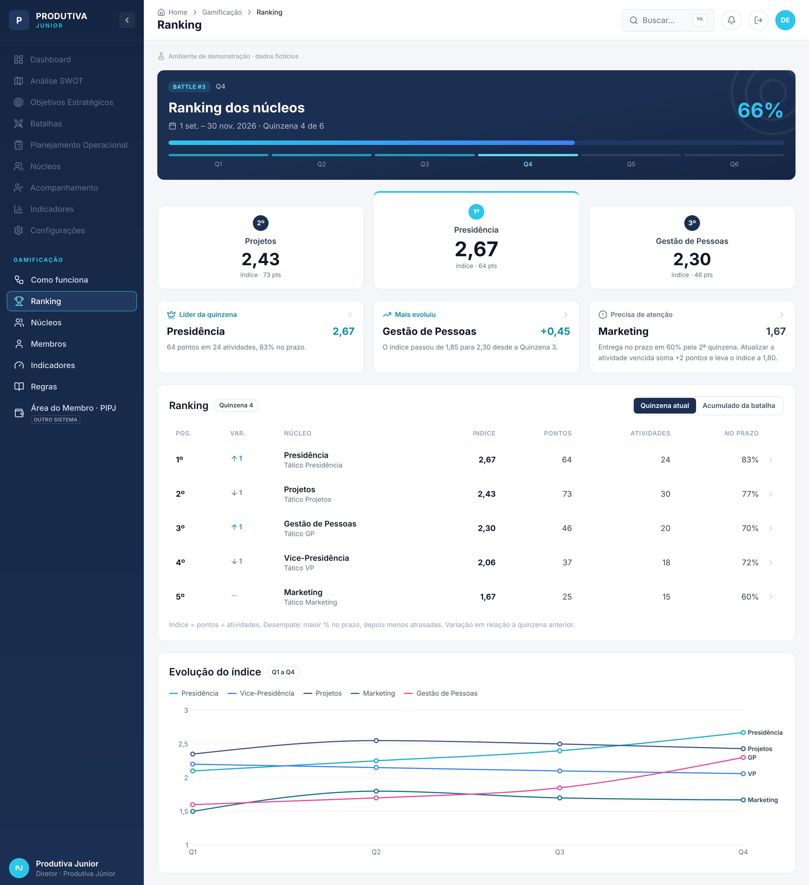
Figura 3. Tela Ranking completa.
Cabeçalho da batalha: mostra a Battle #3 (1 set. a 30 nov. 2026), a quinzena atual (4 de 6) e o progresso da batalha (66%).
Pódio: os três primeiros núcleos, com o índice em destaque. Na Quinzena 4: Presidência (2,67), Projetos (2,43) e Gestão de Pessoas (2,30).
Três destaques:
Líder da quinzena: Presidência, com 64 pontos em 24 atividades e 83% no prazo.
Mais evoluiu: Gestão de Pessoas, cujo índice subiu 0,45 (de 1,85 para 2,30).
Precisa de atenção: Marketing, com entrega no prazo em 60% pela 2ª quinzena seguida. O texto é construtivo e mostra o caminho: atualizar a atividade vencida soma 2 pontos e leva o índice a 1,80.
Tabela do ranking: posição, variação desde a quinzena anterior (seta para cima, seta para baixo ou traço), núcleo, índice, pontos, atividades e percentual no prazo. Clicar numa linha abre o núcleo.
Gráfico de evolução: o índice de cada núcleo da Q1 à Q4.
O alternador Quinzena atual / Acumulado da batalha troca a tabela pela visão acumulada, que mostra o índice de cada quinzena e a média:
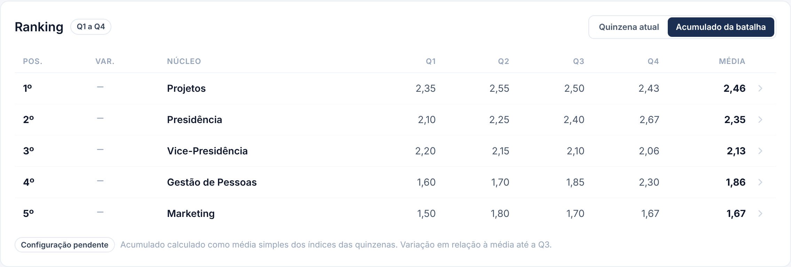
Figura 4. Visão "Acumulado da batalha".
O critério do acumulado (média simples dos índices) ainda é uma configuração pendente.
8. Tela Núcleos
Mostra tudo o que um núcleo precisa saber sobre a sua quinzena. O seletor no topo troca o núcleo.
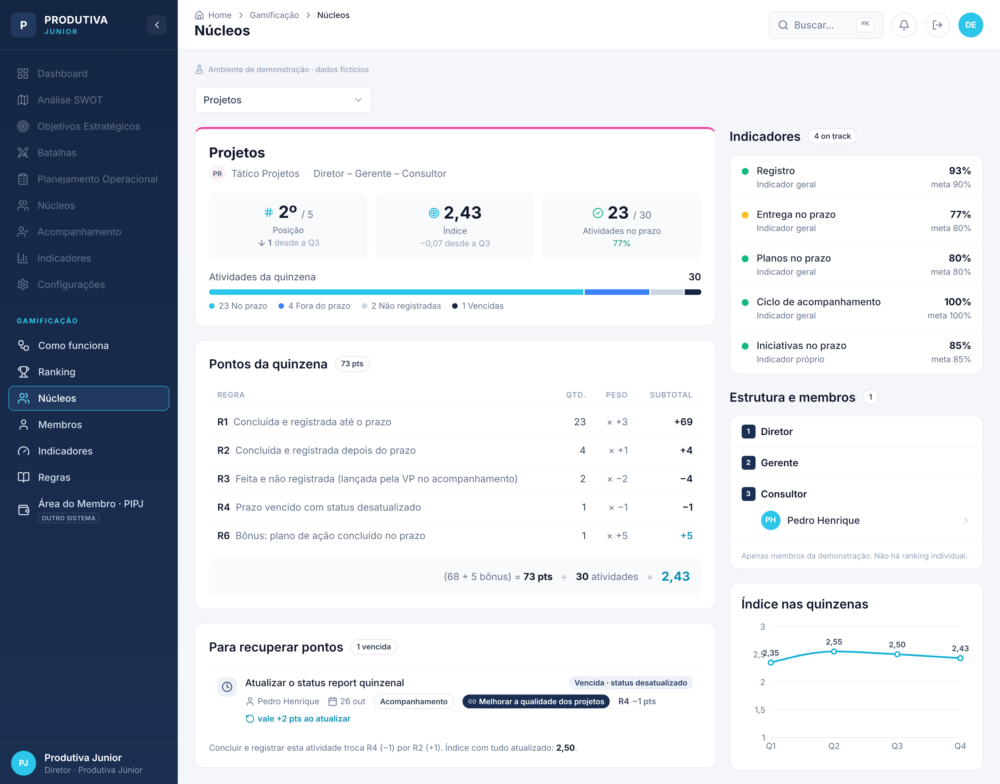
Figura 5. Tela do núcleo Projetos.
Cabeçalho: nome do núcleo, tático, estrutura de cargos e três números: posição, índice e atividades entregues no prazo. A barra mostra a situação das atividades (no prazo, fora do prazo, não registradas e vencidas).
Pontos da quinzena: a conta completa, regra por regra (quantidade × peso = subtotal), mais os bônus, até chegar ao índice. Qualquer membro consegue conferir de onde veio o resultado.
Para recuperar pontos: as atividades vencidas com status desatualizado e quanto cada uma vale se for concluída e registrada (+2 pontos, porque passa de R4 para R2). Também mostra qual seria o índice se tudo fosse atualizado.
Indicadores: os 4 indicadores gerais e o indicador próprio do núcleo, com valor, meta e cor do semáforo. Um indicador vermelho pela 2ª quinzena seguida ganha a etiqueta "Vai para a pauta da RN".
Estrutura e membros: os cargos do núcleo em ordem hierárquica, com os membros da demonstração em cada nível.
Índice nas quinzenas: a evolução do núcleo da Q1 à Q4.
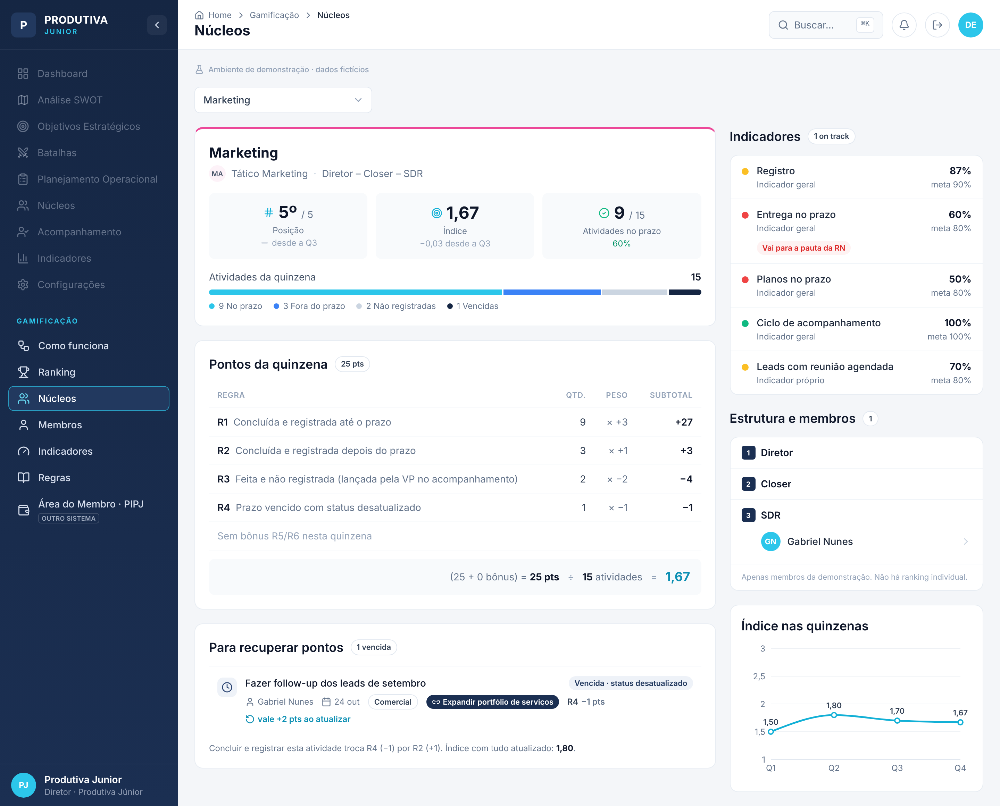
Figura 6. Tela do núcleo Marketing, com o alerta de vermelho pela 2ª quinzena.
9. Tela Membros
Mostra a quinzena de um membro sem posição individual e sem comparação com outros membros. Os pontos de cada pessoa contam para o núcleo.
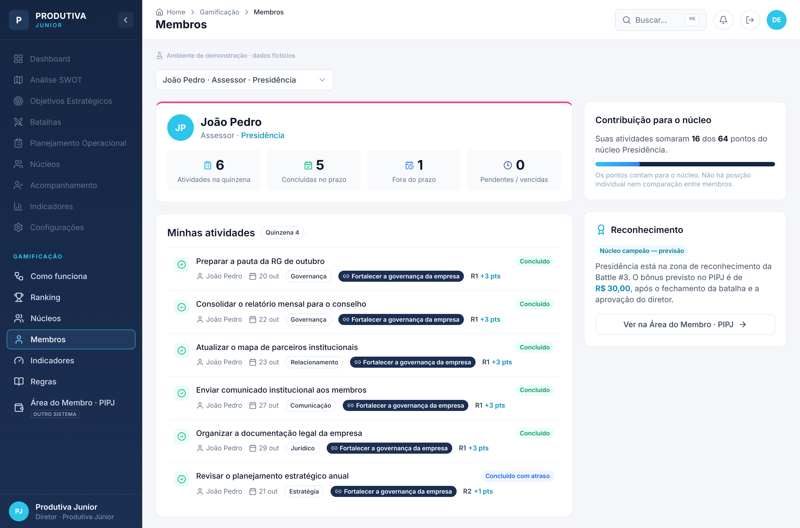
Figura 7. Tela do membro João Pedro (Assessor · Presidência).
Números da quinzena: atividades, concluídas no prazo, fora do prazo e pendentes/vencidas.
Minhas atividades: a lista no mesmo estilo das Ações Operacionais do sistema, com status, prazo, etiqueta, objetivo vinculado e a regra aplicada.
Contribuição para o núcleo: por exemplo, "Suas atividades somaram 16 dos 64 pontos do núcleo Presidência".
Reconhecimento: informa se o núcleo está na zona de reconhecimento (campeão ou que mais evoluiu) e leva para a Área do Membro · PIPJ.
10. Tela Indicadores (visão da VP)
É a ferramenta de trabalho da gerente e dos assessores da VP para preparar a RN.
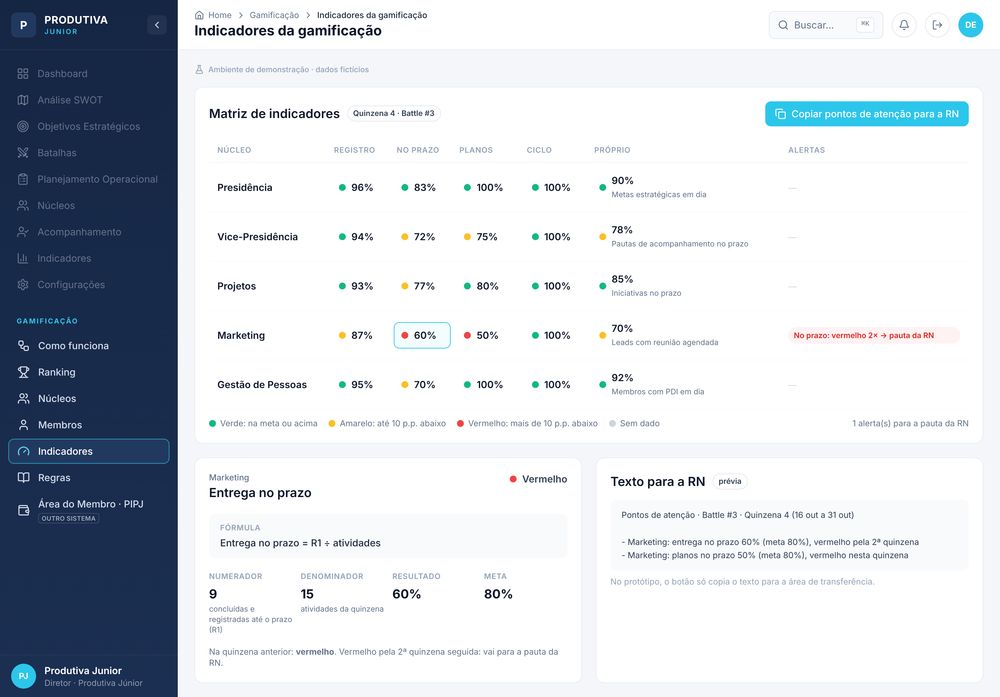
Figura 8. Tela Indicadores.
Matriz núcleos × indicadores: Registro, No prazo, Planos, Ciclo e Próprio, cada célula com a cor do semáforo.
Detalhe da célula: ao clicar numa célula, aparecem a fórmula, o numerador, o denominador, o resultado e a meta. Exemplo: Marketing, entrega no prazo = 9 ÷ 15 = 60% (meta 80%).
Coluna de alertas: marca os indicadores vermelhos por 2 quinzenas seguidas.
Botão "Copiar pontos de atenção para a RN": gera um texto pronto com os números. Exemplo: "Marketing: entrega no prazo 60% (meta 80%), vermelho pela 2ª quinzena".
Indicador
Fórmula
Meta
Registro
(atividades − R3) ÷ atividades
90%
No prazo
R1 ÷ atividades
80%
Planos no prazo
planos concluídos no prazo ÷ planos com prazo na quinzena
Reúne, num só lugar, as regras R1 a R6 (com a etiqueta "Proposta em validação"), a fórmula do índice, o desempate, o semáforo e os critérios de reconhecimento.
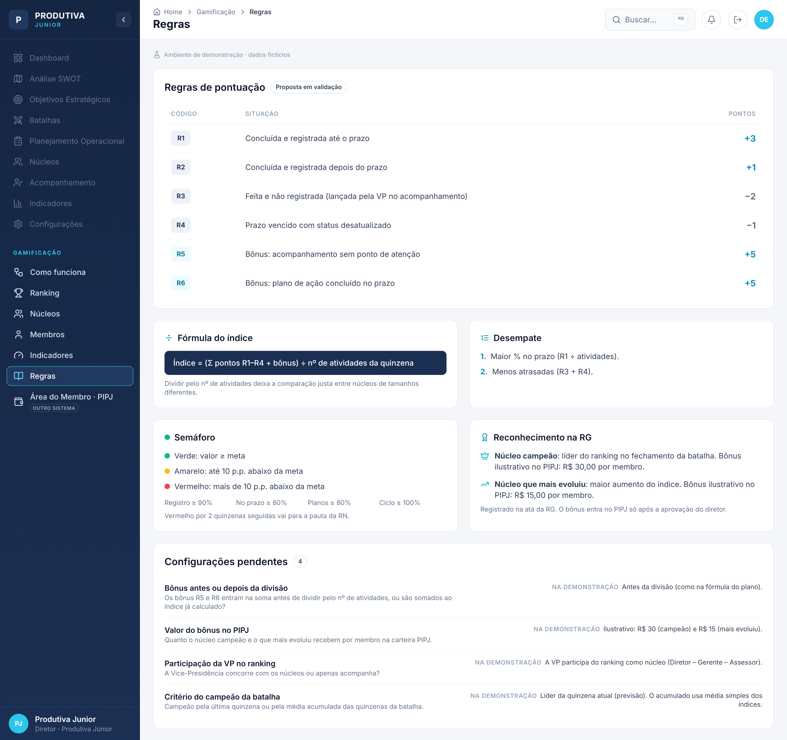
Figura 9. Tela Regras.
No fim da tela ficam as configurações pendentes, que precisam de decisão da diretoria:
Bônus antes ou depois da divisão: na demonstração, o bônus entra antes da divisão pelo número de atividades.
Valor do bônus no PIPJ: na demonstração, R$ 30,00 para o núcleo campeão e R$ 15,00 para o que mais evoluiu, por membro.
Participação da VP no ranking: na demonstração, a VP participa como núcleo.
Critério do campeão da batalha: última quinzena ou média acumulada.
12. Reconhecimento e PIPJ
Ao fim de cada batalha, dois núcleos entram na zona de reconhecimento:
o núcleo campeão, líder do ranking;
o núcleo que mais evoluiu, com o maior aumento do índice.
O reconhecimento é registrado na ata da RG. Além disso, pode virar um bônus de reconhecimento no crédito do PIPJ de cada membro do núcleo, desde que o diretor aprove.
O PIPJ fica em outro sistema, a Área do Membro. Lá o membro tem uma carteira com créditos para gastos de desenvolvimento: até R$ 300,00 por pedido, com comprovante, nas categorias capacitação, papelaria, MEJ, eventos sênior e tecnologia. A gamificação não aparece na Área do Membro. O membro só vê o efeito dela: o aumento do saldo pelo bônus.
13. Área do Membro · PIPJ
Esta tela simula o outro sistema. Por isso tem um visual diferente, sem a barra lateral da VP, e um botão para voltar ao sistema estratégico.
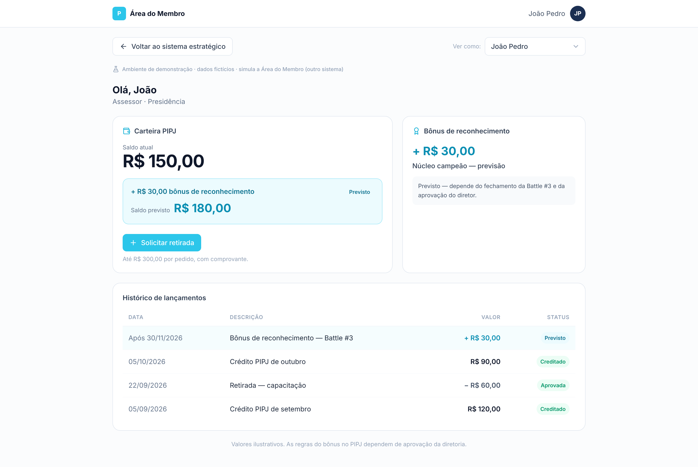
Figura 10. Área do Membro de João Pedro, cujo núcleo (Presidência) é o campeão previsto.
Carteira PIPJ: saldo atual de R$ 150,00 e, em destaque, o aumento previsto de R$ 30,00, que leva o saldo previsto a R$ 180,00.
Bônus de reconhecimento: aparece como "Previsto — depende do fechamento da Battle #3 e da aprovação do diretor".
Histórico de lançamentos: data, descrição, valor e status de cada crédito e retirada.
Quem não está num núcleo reconhecido vê a mensagem "Seu núcleo ainda não está na zona de reconhecimento nesta batalha":
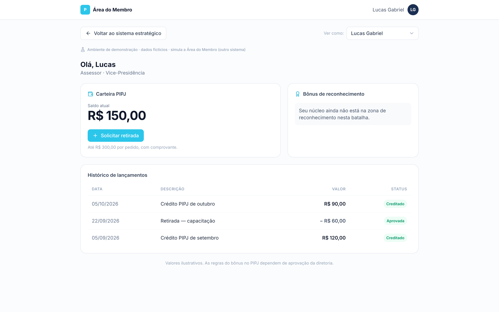
Figura 11. Área do Membro de Lucas Gabriel (Vice-Presidência), sem bônus previsto.
O botão Solicitar retirada abre um formulário demonstrativo com categoria, valor (até R$ 300,00), justificativa e comprovante. Ao enviar, o sistema mostra "Solicitação simulada — nenhuma operação real foi feita".
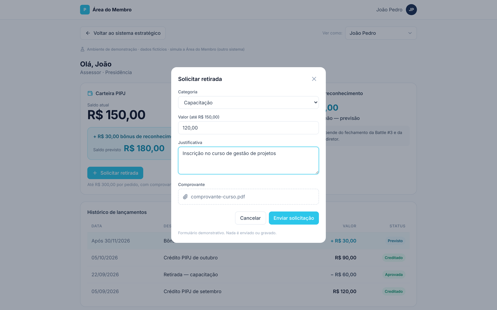
Figura 12. Formulário de solicitação de retirada (demonstrativo).
14. Resultado da Quinzena 4 (dados da demonstração)
Posição
Núcleo
Pontos
Atividades
No prazo
Índice
Variação
1º
Presidência
64
24
83%
2,67
subiu 1
2º
Projetos
73
30
77%
2,43
caiu 1
3º
Gestão de Pessoas
46
20
70%
2,30
subiu 1
4º
Vice-Presidência
37
18
72%
2,06
caiu 1
5º
Marketing
25
15
60%
1,67
manteve
Zona de reconhecimento (previsão): Presidência (campeã) e Gestão de Pessoas (mais evoluiu, +0,45).
Ponto de atenção para a RN: Marketing, com entrega no prazo vermelha pela 2ª quinzena seguida.
15. Próximos passos
Validar as regras de pontuação e as metas com a diretoria.
Decidir as configurações pendentes (bônus, valor no PIPJ, participação da VP e critério do campeão).
Definir o indicador próprio de cada núcleo.
Definir como os dados do Monday chegam ao sistema estratégico.
Aprovar o uso do bônus de reconhecimento no PIPJ.
16. Acesso ao protótipo
O protótipo está publicado na Vercel e pode ser incorporado no Google Sites (Inserir → Incorporar → URL). Ele abre direto na tela de Ranking, sem login, e não tem nenhuma integração real: todos os dados são fictícios e ficam só na página.